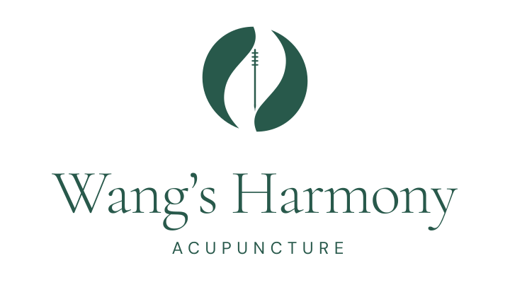
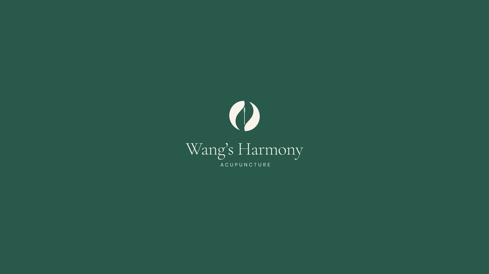

A considered identity.
A sense of balance.
A simple harmony circle formed by two flowing botanical shapes, with one fine acupuncture needle at its center. The mark connects Chinese medicine, thoughtful care and natural balance.
Download the media packThe identity

The palette
#28594b#26352e#f7f3eb#dce5d8#a5684eUse paper for generous backgrounds, jade for primary actions and the identity, ink for reading, sage for quiet secondary surfaces, and clay sparingly for accents. Keep body text in ink or jade on paper; use paper on jade for reversed applications.
Typography
Cormorant Garamond
Thoughtful, personal care.
Display headings and the wordmark. Prefer regular or medium weights with open line spacing.
DM Sans
Clear, welcoming information.
Body copy, navigation, appointment information and the spaced acupuncture descriptor. Fonts are bundled under the SIL Open Font License.
Space and scale
Leave at least one quarter of the symbol width clear on every side of each logo. Minimum digital widths: symbol 24 px, horizontal logo 320 px, stacked logo 240 px. The mark should remain recognizable without relying on the needle’s smallest details.
Keep the original proportions. Use the supplied single-color versions. Avoid shadows, outlines, gradients, rotation, tight cropping, extra decorative elements, and placing the mark on busy imagery.
Social wallpaper

A clean 16:9 canvas for Xiaohongshu and other social posts: solid jade, centered ivory identity, no additional wording. Available at 3840 × 2160 and 1920 × 1080. The social preview is 1200 × 630.
Individual downloads
- logos/symbol.svg
- logos/symbol-512.png
- logos/symbol-1024.png
- logos/logo-horizontal.svg
- logos/logo-horizontal-1024.png
- logos/logo-horizontal-2048.png
- logos/logo-stacked.svg
- logos/logo-stacked-1024.png
- logos/logo-stacked-2048.png
- logos/symbol-black.svg
- logos/symbol-black-512.png
- logos/symbol-black-1024.png
- logos/logo-horizontal-black.svg
- logos/logo-horizontal-black-1024.png
- logos/logo-horizontal-black-2048.png
- logos/logo-stacked-black.svg
- logos/logo-stacked-black-1024.png
- logos/logo-stacked-black-2048.png
- logos/symbol-ivory.svg
- logos/symbol-ivory-512.png
- logos/symbol-ivory-1024.png
- logos/logo-horizontal-ivory.svg
- logos/logo-horizontal-ivory-1024.png
- logos/logo-horizontal-ivory-2048.png
- logos/logo-stacked-ivory.svg
- logos/logo-stacked-ivory-1024.png
- logos/logo-stacked-ivory-2048.png
- logos/apple-touch-icon.png
- logos/favicon.svg
- logos/favicon-32.png
- logos/favicon-64.png
- wallpaper-16x9.svg
- wallpaper-3840x2160.png
- wallpaper-1920x1080.png
- social-preview.svg
- social-preview.png


All PNG logos use transparent backgrounds, except the app icons and social backgrounds. Production SVG wordmarks are outlined for portability. The editable folder contains live-text masters; install the bundled font files before editing. Existing source logos remain preserved in the website repository.